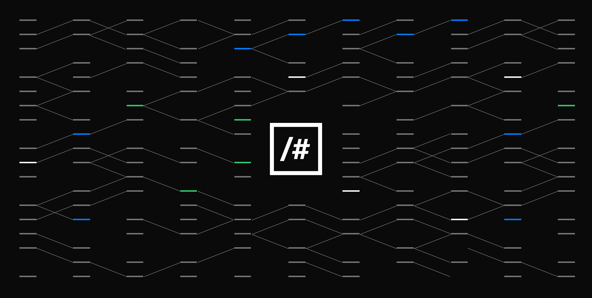
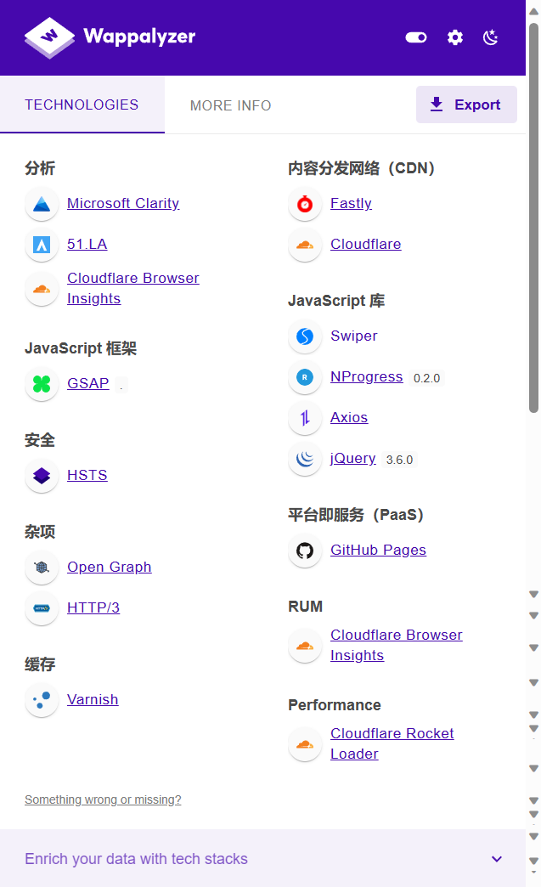

2025-1-4

以下是借助Wappalyzer工具以及本人技术知识栈做出的网站技术解释，为【 https://zyhorg.ac.cn/ 】网站做出技术栈释义。
 襄阳职业技术大学Wappalyzer技术栈报告
什么是 Wappalyzer？
Wappalyzer 是一种技术分析工具，用于检测网站使用的技术栈，包括前端框架、后端技术、CDN、安全特性、JavaScript 库、分析工具等。它可以帮助开发者和技术分析人员快速了解目标网站的技术实现细节，是网站竞品分析和技术研究的利器。
功能：Clarity 是一个高级的用户行为分析工具，专注于用户交互数据的可视化分析，包括页面热图 (Heatmaps)、滚动深度 (Scroll Depth) 和会话回放 (Session Replay)。
用途：通过分析用户的点击和滚动行为，识别页面用户体验的瓶颈，优化设计布局，提升用户留存率 (Retention Rate)。适合大型内容型网站和需要提升用户转化率的场景。
功能：51.LA 是中国市场广泛使用的流量统计服务，类似于 Google Analytics，但更贴合国内用户的需求。
用途：提供访客行为 (Visitor Behavior)、地理位置 (Geo-Location)、终端设备 (Device Types) 等核心数据。特别适合针对国内市场的网站，便于深入分析访客来源和用户画像 (User Persona)。
功能：该工具监控客户端浏览器的性能指标，例如首字节时间 (Time to First Byte, TTFB)、加载时间 (Load Time) 和渲染性能 (Rendering Performance)。
用途：通过收集真实用户监控数据 (Real User Monitoring, RUM)，评估网站的性能表现，诊断潜在的性能瓶颈，从而改进用户体验 (User Experience, UX)。
功能：GSAP 是一个强大的动画库，支持高性能的 DOM 操作和复杂的时间线控制 (Timeline Control)。
用途：提供精准的动画控制 (Precise Animation Control)，实现如页面过渡动画 (Page Transitions)、滚动触发动画 (Scroll-triggered Animations) 和交互反馈 (Interactive Feedback)。它的帧速率优化 (Frame Rate Optimization) 和硬件加速支持 (Hardware Acceleration Support) 确保动画流畅性，是创建现代 Web 动画的首选工具。
功能：Swiper 是一个轻量级的响应式滑块库，支持触摸事件 (Touch Events)、循环滑动 (Looping) 和分页指示器 (Pagination)。
用途：被用于实现如轮播图 (Image Carousels)、内容滑块 (Content Sliders) 和移动端友好的滑动交互 (Swipe Interactions)，提高移动端体验 (Mobile-first Experience)。
功能：Axios 是一个基于 Promise 的 HTTP 客户端库，用于发起 AJAX 请求，支持跨站点请求 (Cross-Site Requests, CORS) 和请求拦截 (Request Interceptors)。
用途：在前端与后端 API 的交互中，用于数据抓取 (Data Fetching)、表单提交 (Form Submissions) 和状态更新 (State Updates)，提高代码的可维护性 (Maintainability)。
功能：HSTS 是一种安全策略，强制客户端 (如浏览器) 使用 HTTPS 连接访问网站。
用途：通过防止降级攻击 (Protocol Downgrade Attacks) 和会话劫持 (Session Hijacking)，保护用户的数据传输安全。
网站 https://zyhorg.ac.cn/ 综合采用了现代化的技术栈，具备以下显著特点：
转载本网文章请注明出处